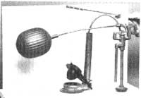

The conventional Flush toilet uses between five and seven gallons of water to clear its bowl-an amount that is only occasionally truly needed to do a thorough job. More often than not, just a couple of gallons of water are sufficient to rinse away liquids. Unfortunately, for the sake of convenience toilets aren't equipped to deal with such inequalities.
Solution: Modify your commode so that it can control the volume of the flush to meet the need. It's as simple as cutting a piece of brass rod to the proper length and bending hooks into each end.
Most toilets have chains between the arms on their handles and the flapper valve. When you push down on the handle, the flapper lifts. When you let go, the flapper stays up because it's filled with air and floats. When the tank is drained, the flapper falls back into place.
If you were able to force the flapper down before all the water had drained out of the tank, though, you'd save that much liquid. And to do that, you need a rigid connection between the lever arm on the handle and the flapper.
So lift the lid off the top of your toilet tank, and measure the distance the chain spans between its hole in the lever arm and the flapper valve. Cut a piece of 3/32" or 1/8" brass rod (brazing rod will work well) to that length plus 1-1/2". Then bend the last 3/4" of each end to form a hook, as shown in the photo (be sure the bends are oriented properly to fit in the holes in the arm and the flapper). Slip the hooks into the holes, and your water-saving commode will be ready to flush.
It'll probably take a little experimenting to anticipate just how much water will be needed to clear the bowl, and you'll have to spend a few extra seconds in the necessary room while waiting for the right moment to push the handle up. (Of course, if you're smitten by a real fit of laziness, the rod will still allow an unattended full-volume flush.) But, by taking control, you can substantially cut the amount of water you use for toilet flushing.
|
 |
|
|